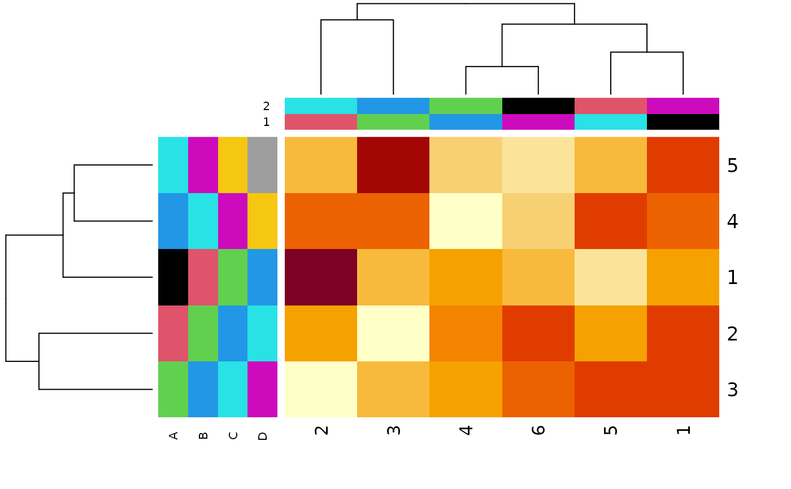

heatmap.plus.2.RdThis function is basically heatmap.plus::heatmap.plus from heatmap.plus package, but it includes a pair of additional arguments controlling the proportion of row and column color sidebars.
heatmap.plus.2(
x,
Rowv = NULL,
Colv = if (symm) "Rowv" else NULL,
distfun = dist,
hclustfun = hclust,
reorderfun = function(d, w) reorder(d, w),
add.expr,
symm = FALSE,
revC = identical(Colv, "Rowv"),
scale = c("row", "column", "none"),
na.rm = TRUE,
margins = c(5, 5),
ColSideColors,
RowSideColors,
propColSide = 0.1,
propRowSide = 0.1,
cexRow = 0.2 + 1/log10(nr),
cexCol = 0.2 + 1/log10(nc),
labRow = NULL,
labCol = NULL,
main = NULL,
xlab = NULL,
ylab = NULL,
keep.dendro = FALSE,
verbose = getOption("verbose"),
...
)numeric matrix of the values to be plotted
determines if and how the *row* dendrogram should be computed and
reordered. Either a dendrogram or a vector of values used to reorder the
row dendrogram or NA to suppress any row dendrogram (and reordering)
or by default, NULL.
determines if and how the *column* dendrogram should be
reordered. Has the same options as the Rowv argument above and additionally
when x is a square matrix, Colv = "Rowv" means that columns
should be treated identically to the rows.
function used to compute the distance (dissimilarity) between
both rows and columns. Defaults to dist.
function used to compute the hierarchical clustering when
Rowv or Colv are not dendrograms. Defaults to hclust.
function(d,w) of dendrogram and weights for reordering the
row and column dendrograms. The default uses reorder.dendrogram.
expression that will be evaluated after the call to
image. Can be used to add components to the plot.
logical indicating if x should be treated symmetrically;
can only be true when x is a square matrix.
logical indicating if the column order should be reversed for plotting, such that e.g., for the symmetric case, the symmetry axis is as usual.
character indicating if the values should be centered and scaled
in either the row direction or the column direction, or none. The default
is "row" if symm false, and "none" otherwise.
logical indicating whether NA's should be removed.
numeric vector of length 2 containing the margins (see
par(mar= *)) for column and row names, respectively.
(optional) character matrix with number of columns
matching number of columns in x. Each column is plotted as a column
similar to heatmap()'s ColSideColors. colnames() will be used for labels if
present.
(optional) character matrix with number of rows matching
number of rows in x. Each column is plotted as a row similar to
heatmap()'s ColSideColors. colnames() will be used for labels if present.
numeric controls how much room to allocate for the side color bars. E.g. 0.5 is even split between the heatmap and the bars. Default is 0.1. That is, 10% bars, 90% heatmap.
numeric see above
positive number, used as cex.axis in for the row axis
labeling. The default currently only uses number of rows.
see above.
character vectors with row labels to use; defaults to rownames().
see above.
main title; defaults to none.
x-axis title; defaults to none.
y-axis title; defaults to none.
logical indicating if the dendrogram(s) should be kept as
part of the result (when Rowv and/or Colv are not NA).
logical indicating if information should be printed.
additional arguments passed to image.
z = matrix(rnorm(30),nrow=5,ncol=6);
rlab = matrix(as.character(c(1:5,2:6,3:7,4:8)),nrow=5,ncol=4);
clab = matrix(as.character(c(1:6,6:1)),nrow=6,ncol=2);
colnames(rlab) = LETTERS[1:dim(rlab)[2]];
colnames(clab) = 1:dim(clab)[2];
heatmap.plus.2(z, ColSideColors=clab,
RowSideColors=rlab,
propColSide=0.1,
propRowSide=0.2);
